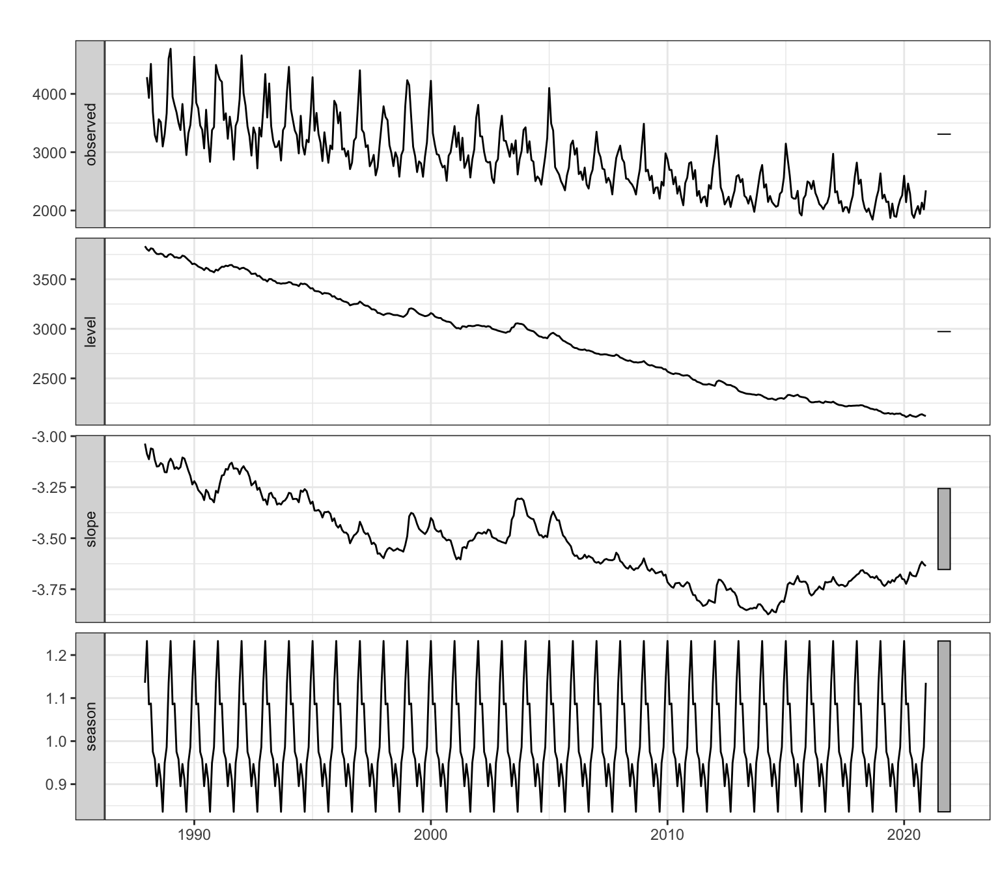
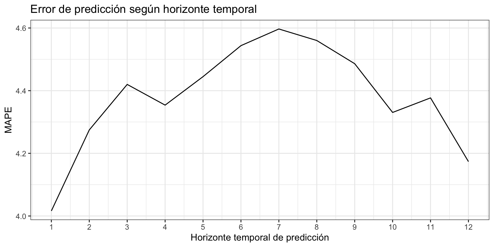

Iván Arribas (Depto. Análisis Económico. Universitat de València)
1 Introducción
Consideremos de nuevo la serie temporal correspondiente al número de defunciones causadas por enfermedades cerebrovasculares, Esta serie está disponible en el Instituto Nacional de Estadística desde enero de 1980 hasta diciembre de 2021, un total de 42 años o 504 meses.
En la descriptiva vimos que la descomposición revelaba la presencia de varios valores atípicos concentrados al inicio de la serie. Por este motivo, para el análisis por técnicas de Alisado Exponencial vamos a recortar la serie y considerarla solo desde enero de 1990, 32 años o 384 meses.
La serie presenta tendencia decreciente y estacionalidad de orden 12 en un claro esquema multiplicativo. Ya vimos que el determinante principal del efecto estacional es la temperatura.
Figura 1: Defunciones causadas por enfermedades cerebrovasculares
2 Ajuste por alisado exponencial e interpretación
Vamos a aplicar la metodología de Alisado Exponencial a la serie de defunciones. Si se estima el modelo sin imponer ninguna restricción ets identifica como modelo óptimo ETS(M,Ad,M), con un valor de \(\phi = 0.979\), muy cercano a su valor máximo de \(0.98\). Por tanto, se opta por solicitar de nuevo el mejor modelo excluyendo aquellos con amortiguamiento.
ETS(M,A,M)
Call:
ets(y = DefEnfCer, damped = FALSE)
Smoothing parameters:
alpha = 0.0886
beta = 0.0017
gamma = 1e-04
Initial states:
l = 3758.8846
b = 2.5499
s = 1.1246 0.9894 0.9527 0.8479 0.91 0.9361
0.8968 0.9574 0.9714 1.0943 1.0876 1.2318
sigma: 0.0522
AIC AICc BIC
6120.006 6121.678 6187.167
Training set error measures:
ME RMSE MAE MPE MAPE MASE ACF1
Training set -8.290488 153.0571 109.214 -0.4342249 3.75637 0.671431 0.2588559
El modelo estimado tiene pendiente aditiva, estacionalidad multiplicativa y residuo multiplicativo: \[y_{t+1} = (l_t + b_t) \cdot s_{t+1-m} \cdot (1 + \varepsilon_{t+1}).\]
El valor de \(\alpha\) indica que el nivel de la serie ha ido variando muy lentamente en el tiempo. Los valores de \(\beta\) y \(\gamma\) son prácticamente cero e indican que ambas, pendiente y estacionalidad, se mantienen constantes en el tiempo (véase Figura 2).
autoplot(DefEnfCerEts,xlab ="",main ="")

Figura 2: Descomposición por Alisado Exponencial para defunciones por enfermedades cerebrovasculares
La calidad del ajuste es bastante buena, con un MAPE de 3.8% y un RMSE de 153 casos (o 109 si usamos el MAE). Además, según el MASE, el modelo de alisado supone una mejora del 33% respecto del método ingenuo con estacionalidad, el más sencillo que podríamos aplicar. Además, la ACF1 indica que las estimaciones por intervalo de las previsiones serán incorrectas.
Los últimos valores estimados del nivel y la estacionalidad, que corresponden a diciembre de 2021, nos permiten mostrar gráficamente la componente estacional (Figura 3).
tail(DefEnfCerEts$states, 1)
l b s1 s2 s3 s4 s5 s6 s7 s8 s9 s10 s11
Dec 2021 2086.29 -2.86 1.12 0.99 0.95 0.85 0.91 0.94 0.9 0.96 0.97 1.09 1.09
s12
Dec 2021 1.23
El nivel de las defunciones por enfermedades cerebrovasculares en diciembre de 2021 (última observación) es de 2086 casos y la pendiente -2.9 casos, prácticamente nula. La mayor incidencia de las defunciones por enfermedades cerebrovasculares tiene lugar en invierno, en los meses de diciembre a marzo. En concreto, destaca el mes enero con un incremento del 23% (s12) en las defunciones por enfermedades cerebrovasculares respecto de la media anual. La incidencia en verano es menor que la media anual, observándose en septiembre un 15% menos de casos (s4). El efecto estacional estimado por el método de alisado es muy similar al estimado durante la descriptiva de la serie.
3 Predicción
Si pedimos los valores de predicción y su intervalo de confianza al 95% para los próximos tres años, tenemos (numéricamente sólo se muestra el primer año):
DefEnfCerEtsPre <-forecast(DefEnfCerEts, h =36, level =95)DefEnfCerEtsPre
Recuerda que las fórmulas usadas para el cálculo del intervalo de confianza de las predicciones no son adecuadas.
Point Forecast Lo 95 Hi 95
Jan 2022 2566.426 2303.728 2829.123
Feb 2022 2262.826 2030.258 2495.394
Mar 2022 2273.614 2038.951 2508.276
Apr 2022 2015.382 1806.468 2224.295
May 2022 1983.660 1777.115 2190.206
Jun 2022 1855.576 1661.478 2049.675
Jul 2022 1934.199 1730.920 2137.478
Aug 2022 1877.569 1679.283 2075.855
Sep 2022 1747.132 1561.702 1932.562
Oct 2022 1960.377 1751.251 2169.503
Nov 2022 2033.023 1815.012 2251.034
Dec 2022 2307.507 2058.735 2556.279
Figura 4: Muertes por enf. cerebrovasculares (1990-2021) y predicción (2022-2024)
Las predicciones mantiene la tendencia decreciente observada en la serie (véase Figura 4).
4 Análisis del error
La Figura 5 muestra el residuo del modelo. Se aprecian cuatro meses, febrero de 1999, junio y agosto de 2003 y febrero de 2012 en los que el residuo supera las tres desviaciones típicas porque el número de muertes por enfermedades cerebrovasculares fue muy superior al estimado por el modelo. Además, otros residuos cercanos a las tres desviaciones típicas susceptibles de ser considerados intervención tienen lugar en enero de 2005 y febrero de 2015.
Asumimos que se precisan diez años para hacer una buena estimación, \(k=120\), y que el horizonte temporal es un año, \(h = 12\) meses. La siguiente rutina permite obtener el MAPE para previsiones con un horizonte temporal desde 1 mes hasta 12 meses.
k <-120h <-12TT <-length(DefEnfCer) s <- TT - k - h mapeAlisado <-matrix(NA, s +1, h)for (i in0:s) { train.set <-subset(DefEnfCer, start = i +1, end = i + k) test.set <-subset(DefEnfCer, start = i + k +1, end = i + k + h) fit <-ets(train.set, model ="MAM", damped =FALSE) fcast<-forecast(fit, h = h) mapeAlisado[i +1,] <-100*abs(test.set - fcast$mean)/test.set}errorAlisado <-colMeans(mapeAlisado)errorAlisado
ggplot() +geom_line(aes(x =1:12, y = errorAlisado)) +ggtitle("Error de predicción según horizonte temporal") +xlab("Horizonte temporal de predicción") +ylab("MAPE") +scale_x_continuous(breaks=1:12)

Figura 6: Error de predicción según horizonte temporal
La Figura 6 muestra que aunque el error depende del horizonte temporal de previsión, se mueve en una banda muy estrecha: entre el 4% para previsiones a un mes vista y el 4.6% para previsiones a siete meses vista.
6 Modelos alternativos
¿Podemos reducir el error extramuestral de previsión si cambiamos las opciones por defecto de ets o la serie a analizar? La Figura 7 muestra el error de previsión extramuestral según el horizonte de previsión para los siguientes modelos (todos sin amortiguamiento):
Figura 7: Errores de previsión extramuestral. Varios modelos
De la Figura 7 deducimos que aunque todos los métodos resultan similares en la precisión de las predicciones extramuestrales, en el corto, medio y largo plazo las diferencias pueden ser significativas: la mayor diferencia entre los modelos se da para la previsión a ocho y nueve meses vista y es de 0.75 puntos porcentuales.
Si queremos entrar en matices:
Globalmente los modelos que ofreces previsiones más precisas son los modelos 2 y 6, donde el criterio para estimar los parámetros es la minimización del error de las previsiones a dos periodos vista, en el primer caso sobre la serie original y en el segundo sobre las defunciones medias por día.
A corto plazo destaca el modelo 4, seguido de los modelos 2 y 5.
A medio plazo destacan los modelos 2 y 5, seguidos del modelo 6.
A largo plazo destaca el modelo 6 seguido del modelo 2.
Es decir, tanto la estrategia de predecir la serie de defunciones medias por día, (en lugar de la serie original) como la de usar como criterio para estimar los parámetros del modelo la minimización del error de previsión a dos periodos vista mejoran la calidad de las previsiones extramuestrales. La combinación de estas dos estrategias es óptima para la previsiones a largo plazo.